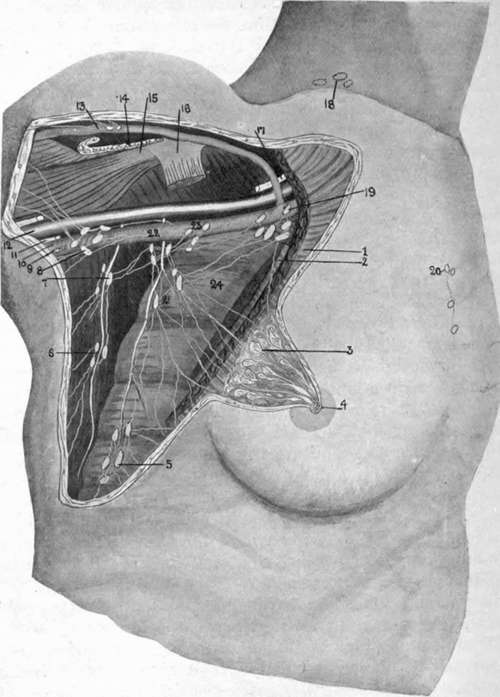

The Mammary Gland
Description
This section is from the book "Surgical Anatomy", by John A. C. MacEwen. Also available from Amazon: Surgical Anatomy.
The Mammary Gland
The Mammary Gland is of epiblastic origin, and retains its rudimentary condition of a number of branching ducts with little glandular tissue until puberty, when the gland tissue rapidly increases. A further marked increase of gland at the expense of fibrous tissue takes place during pregnancy. Between pregnancies, and after the menopause, the gland tissue decreases in bulk,.fatty tissue taking its place. In the male the gland maintains a rudimentary condition, as a rule. The gland consists of some fifteen lobules, which are surrounded and separated from one another by vascular septa of fibrous tissue, which bind them together, forming a capsule, and also form many fine connections with the deeper portions of the skin (suspensory ligament; of Cooper), with the periglandular connective tissue, and a very loose connection with the subjacent pectoral fascia. A bursa occasionally exists between the gland and the pectoral fascia, and in the loose connective tissue a submammary abscess sometimes develops. The main portion of the gland is pyramidal, its base lying on the fascia of the pectoralis major from the second to the sixth rib. A considerable portion of the gland overlaps the pectoralis major externally, and rests on the serratus magnus within the axilla, extending upwards frequently to the upper border of the third rib, while internally and below it overlaps the rectus abdominis and external oblique. Isolated portions of the gland tissue may be found penetrating or even under the pectoral fascia in contact with the fibres of the pectoralis muscle. The nipple is normally situated in the fourth intercostal space, 1 inch from the costo-chondral junction, at the summit of the breast; but as the chest-wall rises more than the breast on inspiration, the nipple is then opposite the fifth space. In nulliparae it frequently projects but slightly, but may be elongated in multiparae, projecting forwards and outwards. It contains erectile and unstriped muscular tissue, and is covered by thin skin, on which the orifices of the fifteen milk, or lactiferous, ducts present. Within the nipple each duct presents an ampulla, or dilatation, and on leaving the nipple the ducts radiate outward to the various lobes. Hence in incising a breast it is important to make the incision radiate from the nipple, so as to avoid division of these ducts. The areola is circular in outline, measures from 1 to 1½ inches in diameter, and is covered by thin skin, which may be pink in colour or pigmented, and becomes darker during pregnancy. A number of subcutaneous sebaceous glands (of Montgomery) frequently give a fine nodular appearance to the areola.
The skin of the breast is normally thin, smooth, and freely movable, the subjacent veins being frequently visible through it, especially during lactation. The blood-supply of the breast is from (1) the external mammary branches of the long thoracic of the axillary ; (2) anterior perforating branches of the internal mammary through the second, third, and fourth spaces ; and (3) the lateral branches of the second, third, and fourth intercostal arteries. The veins join the internal mammary and axillary, while some small ones join tributaries of the external jugular.
The lymphatic supply of the breast is of the greatest importance surgically, as it is along this system that carcinoma spreads from the breast to invade the general system. Fine lymphatics surround the acini and ducts, and communicate with larger channels in the interlobular connective tissue, which in turn communicate with those in the subcutaneous tissues (by running along the suspensory ligaments), and submammary tissues, and those which penetrate the pectoral fascia. The efferent vessels pass from the margin of the gland to the pectoral group of the axillary lymphatics situated along the anterior border of the axilla, and the central superficial group, and thence to the deep glands grouped round the axillary vein, some lymphatics passing to this deep group direct. A few lymphatics lead to the infraclavicular glands, which lie around the termination of the cephalic vein between the pectoralis major and deltoid, and from thence beneath the clavicle to the lower deep cervical glands, which are grouped round the lower portion of the internal jugular vein. Lymphatics from the deep axillary group probably also reach this deep cervical group, and from thence the lymph on the right side is poured into the right lymphatic duct, and on the left into the thoracic duct. Lymphatics also pass from the inner side of the breast to the anterior mediastinal glands in the first four intercostal spaces, which are grouped round the internal mammary artery. Thus it will be seen that, in a case of carcinoma of the breast, we may have lymphatic affection in the axilla, under the clavicle, above the clavicle, and thence to the lymphatic duct, whence the infection would become general. The mass in the axilla causes oedema of the arm from .pressure on the vessels and lymphatics, and pain over the back of the arm above the elbow from pressure on the intercosto-humeral nerve which traverses the central axillary glands ; while the brachial plexus may also become involved, and spreading to the anterior mediastinum may occur. The lymphatics traversing the pectoral fascia become involved, the gland then becoming fixed to the underlying structures, and so rendered immovable. The carcinoma may also spread by the lymphatics in the suspensory ligaments (which become contracted, causing sometimes an orange-skin appearance of the overlying skin, or at others a general flattening), and those surrounding the ducts (producing retraction of the nipple). The subcutaneous lymphatic system is most prone to infection after ulceration of the skin has occurred, and once it is affected dissemination is very rapid, nodules being scattered over the skin of the chest and trunk generally, producing, if the carcinoma be of the scirrhus type, the condition known as cancer en cuirasse, in which great contraction of the whole skin occurs, crushing the chest and killing by suffocation.
Fig. 17.-Diagram of Breast Lymphatics. (Much modified from Testut.)
1. | Pect. major. | 6 and 7. Subscapular group surrounding subscapular | 16. | Pect. minor tendon. | |
2. | Pect. minor. | 17. | Brachial plexus. | ||
3« | Breast dissected, showing acini, ducts, and ampulla?. | 8. | artery. Deep brachial group. | 18. | Supraclavicular group (deep cervical). |
9. | Nerve of Wrisberg. | 19. | Infraclavicular group. | ||
4. | Areola and nipple, showing | 10. | Axillary vein. | 20. | Anterior mediastinal group. |
openings of ducts. | 11. | Ulnar nerve. | 21. | Pectoral group. | |
5. | Inferior thoracic group surrounding external mammary artery (long thoracic). | 12. | Axillary artery. | 22. | Central superficial group. |
13. | Cephalic vein. | 23. | Deep group. | ||
14. | Pect. major tendon. | 24. | Serratus magnus. | ||
15. | Coraco-brachial and biceps. | ||||
Carcinoma is the most common tumour of the breast, and it occurs in many different forms-scirrhus, in which there is abundant fibrous tissue ; adeno-carcinoma, which is glandular in microscopic section, and clinically presents one or more bosses on the breast, covered by shiny, discoloured skin ; acute carcinoma, which rapidly involves the whole breast, and is not unlike an abscess clinically, while microscopically it presents masses of loosely-packed cells with but little stroma ; Paget's nipple, which begins as an eczema of the nipple and areola, and gradually spreads throughout the ducts.
Sarcoma, frequently of the adenomatous type, sometimes occurs in the breast, and, as it is generally encapsulated in the early stages, is of slow growth.
Of the simple tumours, various forms of adenoma are most common, and where situated in the lower segment, and deeply in the breast substance, are best removed through a curved incision along the lower border of the breast, the gland being lifted up, and the tumour extracted from its under surface (Thomas). Cysts also occur, either simple retention cysts, due to blocking of the milk ducts (galactocele), or papillomatous cysts.
Inflammation of the breast (mastitis) may be followed by abscess, which is generally intramammary, but may be supra-or inframammary, the latter being not infrequently due to tubercle, and sometimes occurring in the bursa beneath the breast. The typical pyogenic abscess is intramammary.
The breasts are frequently unsymmetrical, the left being generally the larger. Absence of one or both breasts (amazia) is very rare, but the presence of supernumerary nippies (polythelia) and glands (polymazia) is more common. The additional glands generally lie below and inside the normal, but may occur at any point along a line extending from the axilla to the groin. They have also been found on the thigh, back, buttock, etc.
In palpating the breast it is important to remember that, if the breast be taken between the finger and thumb, the normal breast tissue will give a. sensation not unlike that of a tumour. The correct method, therefore, is to lay the palm of the hand and fingers flat on the breast, allowing the nipple to project between the fingers, and then to palpate the gland against the chest-wall.
The nerve-supply of the breast is from the fourth, fifth, and sixth intercostals, by which filaments of the dorsal sympathetic also reach it.
Continue to:
- prev: The Ribs
- Table of Contents
- next: The Thoracic Cavity